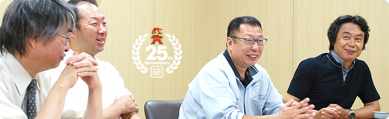
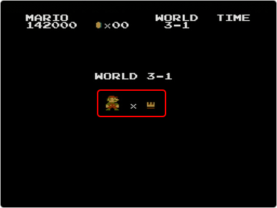

### 「スーパーマリオ２５周年」

<DIV ID="volbox-5"><P CLASS="volnum1"><A CLASS="btn-volnum1" TITLE="社長の代わりに糸井重里さんが訊く" HREF="../vol1/index.html">社長の代わりに糸井重里さんが訊く
<P CLASS="volnum2"><A CLASS="btn-volnum2" TITLE="ファミコンとマリオ 篇" HREF="../vol2/index.html">ファミコンとマリオ 篇
<P CLASS="volnum3"><A CLASS="btn-volnum3" TITLE="『スーパーマリオ』シリーズ開発経験者 篇 その１" HREF="../vol3/index.html">『スーパーマリオ』シリーズ開発経験者 篇 その１
<P CLASS="volnum4"><A CLASS="btn-volnum4" TITLE="『スーパーマリオ』シリーズ開発経験者 篇 その２" HREF="../vol4/index.html">『スーパーマリオ』シリーズ開発経験者 篇 その２
<P CLASS="volnum5"><A CLASS="btn-volnum5s" TITLE="『スーパーマリオ』生みの親たち 篇" HREF="../vol5/index.html">『スーパーマリオ』生みの親たち 篇

<DIV ID="main-visual">
<H2>
<DIV ID="pagebox-wrap">
<DIV CLASS="pagebox">
<P CLASS="pagenum"><A HREF="index.html">1. 十字ボタンを押してジャンプ
<P CLASS="pagenum"><A HREF="index2.html">2. 入社１年目の新人も
<P CLASS="pagenums"><A>3. “集大成”のソフトに
<P CLASS="pagenum"><A HREF="index4.html">4. ２人でいっしょにコースデザイン
<P CLASS="pagenum"><A HREF="index5.html">5. “メモリ減らし”のために
<P CLASS="pagenum"><A HREF="index6.html">6. “スーパーマリオ保存会”
<P CLASS="pagenum"><A HREF="index7.html">7. 京都文化のように

<DIV>

<DIV ID="int-box-wrap">
<H3>
<DIV CLASS="int-box"><DIV CLASS="int-name"><P>岩田
<DIV CLASS="int-text"><P>２５年にわたる『スーパーマリオ』の歴史が<br>そもそもどのようにしてはじまったのか、<br>宮本さんから改めてお話ししてもらえますか？
<DIV CLASS="clear"><DIV CLASS="int-box"><DIV CLASS="int-name"><P>宮本
<DIV CLASS="int-text"><P>はい。『スーパーマリオ』の２年ほど前に、<br><SCRIPT LANGUAGE="JavaScript" TYPE="text/javascript">
<!--
	document.write('<A HREF="player.html?width=400&amp;height=345&amp;id=006" CLASS="thickbox 006" TITLE="業務用の『マリオブラザーズ』"><SPAN>業務用の『マリオブラザーズ』<'+'/SPAN><'+'/A>');
//-->
</SCRIPT><NOSCRIPT><A HREF="img/slide006.jpg"><SPAN>業務用の『マリオブラザーズ』</SPAN></NOSCRIPT>をつくりましたけど、<br>あのときはスクロールもしないし、背景が黒くて<br>ちょっと地味な印象があったんです。<br>そこで、スクロールして、背景も明るくて、<br>これまでよりも大きめのキャラクターが動く<br>『マリオブラザーズ』みたいなものをテストしようと。
<DIV CLASS="clear"><DIV CLASS="int-box"><DIV CLASS="int-name"><P>岩田
<DIV CLASS="int-text"><P>それでつくったのが先ほどの話に出てきた<br>四角いものが動くテスト版なんですね。
<DIV CLASS="clear"><DIV CLASS="int-box"><DIV CLASS="int-name"><P>宮本
<DIV CLASS="int-text"><P>そうです。四角だったか、簡単な１枚絵です。<br>もともとスクロールさせたかったので、<br>その時点で２人用をつくるのは諦めました。
<DIV CLASS="clear"><DIV CLASS="int-box"><DIV CLASS="int-name"><P>岩田
<DIV CLASS="int-text"><P>ああ、そうなんですね。<br>『マリオブラザーズ』では２人プレイが楽しめましたけど、<br>それは横スクロールしなかったからで、<br><SCRIPT LANGUAGE="JavaScript" TYPE="text/javascript">
<!--
	document.write('<A HREF="player.html?width=300&amp;height=380&amp;id=007" CLASS="thickbox 007" TITLE="『New スーパーマリオブラザーズ Wii』"><SPAN>『NewスーパーマリオWii』<'+'/SPAN><'+'/A>');
//-->
</SCRIPT><NOSCRIPT><A HREF="img/slide007.jpg"><SPAN>『NewスーパーマリオWii』</SPAN></NOSCRIPT><sup>（※11）</sup>の４人同時プレイのように、<br>スクロールさせても、ひとつの同じ画面に<br>複数のキャラクターを収めるようなことは、<br>当時の技術では、解決することができなかったんですね。
<DIV CLASS="notes-box"><DIV CLASS="notes-num"><P>※11
<DIV CLASS="notes-text"><P>『NewスーパーマリオWii』＝『New スーパーマリオブラザーズ Wii』。２００９年１２月に、Wii用ソフトとして発売されたアクションゲーム。

<DIV CLASS="clear">
<DIV CLASS="clear">

<DIV CLASS="clear">
<DIV CLASS="clear"><DIV CLASS="int-box"><DIV CLASS="int-name"><P>宮本
<DIV CLASS="int-text"><P>はい。ただ、２倍の大きさのキャラクターを動かすことは、<br>『デビルワールド』ですでに実現させていました。
<DIV CLASS="clear"><DIV CLASS="int-box"><DIV CLASS="int-name"><P>岩田
<DIV CLASS="int-text"><P>つまり、『エキサイトバイク』からは<br>画面の一部だけをスクロールさせる部分スクロールの技術を、<br>『デビルワールド』からは、<br>２倍の大きさのキャラクターを動かす２キャラモードの技術を<br>それぞれ持ってきた、ということですね。
<DIV CLASS="clear"><DIV CLASS="int-box"><DIV CLASS="int-name"><P>宮本
<DIV CLASS="int-text"><P>そうなんです。<br>それまでのいろんなソフト技術を総結集しました。
<DIV CLASS="clear"><DIV CLASS="int-box"><DIV CLASS="int-name"><P>中郷
<DIV CLASS="int-text"><P>少し細かいことになりますけど、<br>たとえば<SCRIPT LANGUAGE="JavaScript" TYPE="text/javascript">
<!--
	document.write('<A HREF="player.html?mv=movie002&amp;width=320&amp;height=280&amp;id=movie002" CLASS="thickbox movie002" TITLE="『ドンキーコングＪＲ．』のジャンプ台"><SPAN>『ドンキーコングＪＲ.』<sup>（※12）</sup><'+'/SUP>のジャンプ台<'+'/SPAN><'+'/A>');
//-->
</SCRIPT><NOSCRIPT><A HREF="movie/movie002.jpg"><SPAN>『ドンキーコングＪＲ.』<sup>（※12）</sup>のジャンプ台</SPAN></NOSCRIPT>は<br>あれをつくったＳＲＤのメンバーが<br>『スーパーマリオ』のプロジェクトにも参加していたので、<br>そのまま持ってくるようなこともできたんです。
<DIV CLASS="clear"><DIV CLASS="img-photo">
<DIV CLASS="int-box"><DIV CLASS="int-name"><P>&nbsp;
<DIV CLASS="int-text">
<DIV CLASS="notes-box"><DIV CLASS="notes-num"><P>※12
<DIV CLASS="notes-text"><P>『ドンキーコングＪＲ.』＝１９８２年に、アーケード用ゲームとして登場したアクションゲーム。ファミコン版は１９８３年７月に発売。

<DIV CLASS="clear">
<DIV CLASS="clear">

<DIV CLASS="clear">
<DIV CLASS="clear"><DIV CLASS="int-box"><DIV CLASS="int-name"><P>岩田
<DIV CLASS="int-text"><P>この仕様書を見ると・・・<br>「『ドンキーコング』のスロープ、リフト、ベルトコンベア、はしご、<br>『ドンキーコングＪＲ.』のロープ、丸太、ジャンプ台、<br>『マリオブラザーズ』の敵の攻撃、敵の動き、氷った床、パワー床、<br>などを中心として改良を加える」・・・と書いてありますね。
<DIV CLASS="clear"><DIV CLASS="int-box"><DIV CLASS="int-name"><P>宮本
<DIV CLASS="int-text"><P>ですから、まさに“集大成”のソフトでした。<br>当時はディスクシステムが出る前年でしたし、<br>カセットで出す最後のソフトのつもりだったんです。<br>「さすが任天堂はカセットのことをよく知ってる」とか、<br>「これ、どうやってるの？」と言われるようなものを<br>できるだけいっぱい入れようと思いました。
<DIV CLASS="clear"><DIV CLASS="int-box"><DIV CLASS="int-name"><P>岩田
<DIV CLASS="int-text"><P>いまのゲーム機では、<br>総合的な処理能力の範囲であれば<br>どんな映像表現もできるようになったので、<br>ゲームのなかの表現で、「これ、どうやっているの？」という話は、<br>ある意味、プロの目でしかわからない時代になりましたよね。<br>でも、ファミコンソフトのあの時代は、ハードの制約がとても厳しくて、<br>あまり多彩な映像表現はできませんでした。<br>ハードの制約をかいくぐることで、新しい表現が実現できると、<br>それはおそらく一般の方にとっても見たことのない表現でしたから、<br>お客さんも、ほかのゲームでは見たことのない新しい表現は、<br>「これ、どうやっているの？」というように<br>とても魅力を感じていただけたところがありましたよね。
<DIV CLASS="clear"><DIV CLASS="int-box"><DIV CLASS="int-name"><P>宮本
<DIV CLASS="int-text"><P>そうだったんですよね。そんなふうに<br>いろんなソフトのいい部分を取り入れようとしたんですが、<br>やっぱりおおもとになったのは『エキサイトバイク』でした。<br>たとえばワープの発想はそこから来ています。
<DIV CLASS="clear"><DIV CLASS="int-box"><DIV CLASS="int-name"><P>岩田
<DIV CLASS="int-text"><P>それはどういうことですか？
<DIV CLASS="clear"><DIV CLASS="int-box"><DIV CLASS="int-name"><P>宮本
<DIV CLASS="int-text"><P>業務用の『エキサイトバイク』には３レベルあって、<br>遊びはじめる場所を選ぶことができたんです。<br>「じょうずな人は早く上級のレベルを遊べたらいいよね」ということで。<br>もちろん、『スーパーマリオ』でいきなりワールド７から<br>はじめようとすると難しすぎるんですけど、<br>「じょうずな人はワールド１からワールド８まで<br>すいすい行けたらいいのにね」と。
<DIV CLASS="clear"><DIV CLASS="int-box"><DIV CLASS="int-name"><P>岩田
<DIV CLASS="int-text"><P>へえ〜、そこからワープの発想が来てるんですか・・・。<br>確かに当時のカセットはセーブができませんでしたからね。
<DIV CLASS="clear"><DIV CLASS="int-box"><DIV CLASS="int-name"><P>宮本
<DIV CLASS="int-text"><P>そうなんです。<br>毎回はじめから遊ぶしかなかったんです。<br>でも、最後まで遊びたい人のために<br>ワープができるようにして、そのワープを究めると<br>すぐにワールド８に行けるようにしました。<br>それは『エキサイトバイク』で<br>どのコースからはじめるかを選ぶのに近いものなんです。
<DIV CLASS="clear"><DIV CLASS="int-box"><DIV CLASS="int-name"><P>岩田
<DIV CLASS="int-text"><P>ああ、だから本当にいろんな意味で“集大成”なんですね。
<DIV CLASS="clear"><DIV CLASS="int-box"><DIV CLASS="int-name"><P>宮本
<DIV CLASS="int-text"><P>まさにそういった気持ちでつくりました。
<DIV CLASS="clear"><DIV CLASS="int-box"><DIV CLASS="int-name"><P>岩田
<DIV CLASS="int-text"><P>そもそも、この『スーパーマリオ』をつくったとき、<br>宮本さんが初めて２５６キロビットのメモリを<br>採用したんでしたよね。
<DIV CLASS="clear"><DIV CLASS="int-box"><DIV CLASS="int-name"><P>宮本
<DIV CLASS="int-text"><P>そうでしたね・・・キャラクターは６４キロビットのままですが。
<DIV CLASS="clear"><DIV CLASS="int-box"><DIV CLASS="int-name"><P>岩田
<DIV CLASS="int-text"><P>とはいえ、すぐにディスクシステムに移行することが決まっていて、<br>ディスクの容量は１メガビットでしたから、そんななかで<br>カセットのなかに最大限のものを詰め込もうとすることが<br>『スーパーマリオ』誕生のきっかけになった、というわけなんですね。
<DIV CLASS="clear"><DIV CLASS="img-photo">
<DIV CLASS="int-box"><DIV CLASS="int-name"><P>宮本
<DIV CLASS="int-text"><P>そうですね。<br>でも、そんなことを思っていたのは、僕だけかな？<br>中郷さんにも「これまでのソフト技術を詰め込もう」<br>という志向はありました？
<DIV CLASS="clear"><DIV CLASS="int-box"><DIV CLASS="int-name"><P>中郷
<DIV CLASS="int-text"><P>まあ、詰め込むこと自体はずっとやっていましたよね。<br>こっちの絵をちょっと減らして、<br>代わりにプログラムを入れるとか・・・。
<DIV CLASS="clear"><DIV CLASS="int-box"><DIV CLASS="int-name"><P>宮本
<DIV CLASS="int-text"><P>だから、あの時点で<br>詰め込むノウハウはいっぱいたまっていたよね。
<DIV CLASS="clear"><DIV CLASS="int-box"><DIV CLASS="int-name"><P>中郷
<DIV CLASS="int-text"><P>当時は空きメモリの奪い合いをしていたんです。<br>たとえば、ブロック１個は３バイト、もしくは２バイトですので、<br>２０バイトの空きがあったら１０個くらいは置けるんです。<br>すると宮本さんは「ブロックをあと１０個くらい置きたい」とか言って<br>バババーッと置いていくんです。<br>そうするとメモリはどんどん足らなくなるでしょう。<br>で、ちょうどそのとき近藤さんが<br>エンディングをつくろうとしていたので聞いたんですね。<br>「何バイトでできますか？」と。
<DIV CLASS="clear"><DIV CLASS="int-box"><DIV CLASS="int-name"><P>近藤
<DIV CLASS="int-text"><P>そうでした（笑）。
<DIV CLASS="clear"><DIV CLASS="int-box"><DIV CLASS="int-name"><P>中郷
<DIV CLASS="int-text"><P>ループの曲だったら４０バイトでつくることができると。<br>そしたら２０バイト余るというので、<br>「じゃあ王冠をつくろう！」と宮本さんが言いだして。
<DIV CLASS="clear"><DIV CLASS="int-box"><DIV CLASS="int-name"><P>宮本
<DIV CLASS="int-text"><P>１ＵＰして１０人を超えたら、<br>ご褒美に王冠を用意したくなって（笑）。
<DIV CLASS="clear"><DIV CLASS="img-photo-400px">
<DIV CLASS="int-box"><DIV CLASS="int-name"><P>中郷
<DIV CLASS="int-text"><P>あれを入れたのは最後の最後でしたよね。
<DIV CLASS="clear"><DIV CLASS="int-box"><DIV CLASS="int-name"><P>宮本
<DIV CLASS="int-text"><P>もともと、バグが出たときの安全策のために、<br>１００バイトくらいの空きをとっておいたりするでしょう。<br>でも、開発も終盤になって、<br>「もうバグはなさそうね」という段階になってから、<br>その空きをどんどん使えるようになって、終いには<br>「あと８バイト残っているけど、なんか置きます？」とか聞かれて、<br>（すごくうれしそうに）<br>「ここのブロックはどうしても置きたかったんや！」と（笑）。
<DIV CLASS="clear"><DIV CLASS="int-box"><DIV CLASS="int-name"><P>一同
<DIV CLASS="int-text"><P>（笑）
<DIV CLASS="clear"><DIV CLASS="img-photo">
<DIV CLASS="int-box"><DIV CLASS="int-name"><P>宮本
<DIV CLASS="int-text"><P>で、置いてから「もうバグが出ても知らんよ」って（笑）。<br>でも、そういう攻防をするのが楽しかったんですよね。
<DIV CLASS="clear"><DIV CLASS="int-box"><DIV CLASS="int-name"><P>中郷
<DIV CLASS="int-text"><P>本当に楽しかったですね。
<DIV CLASS="clear"><DIV CLASS="int-box"><DIV CLASS="int-name"><P>宮本
<DIV CLASS="int-text"><P>その昔、「がっちり買いまショウ」<sup>（※13）</sup>という番組がありましたよね。
<DIV CLASS="clear"><DIV CLASS="int-box"><DIV CLASS="int-name"><P>岩田
<DIV CLASS="int-text"><P>はいはい、ありました（笑）。<br>買い物ゲームの番組ですよね。
<DIV CLASS="clear"><DIV CLASS="int-box"><DIV CLASS="int-name"><P>中郷
<DIV CLASS="int-text"><P>たとえば１０万円のコースがあって、<br>スタジオには、値段をふせられた冷蔵庫とかテレビとか、<br>いろんな商品がたくさん並べてあって・・・。
<DIV CLASS="clear"><DIV CLASS="int-box"><DIV CLASS="int-name"><P>宮本
<DIV CLASS="int-text"><P>１０万円以内で買い物をしなければいけなくて、<br>出場者は高そうな商品からカゴに入れていって、<br>１円でもオーバーすると、失格してしまうと。
<DIV CLASS="clear"><DIV CLASS="int-box"><DIV CLASS="int-name"><P>中郷
<DIV CLASS="int-text"><P>で、最後の最後に即席カレーをカゴに入れるんですよね。
<DIV CLASS="clear"><DIV CLASS="int-box"><DIV CLASS="int-name"><P>宮本
<DIV CLASS="int-text"><P>そうそう、１００円単位の調整は即席カレーで（笑）。
<DIV CLASS="clear"><DIV CLASS="int-box"><DIV CLASS="int-name"><P>中郷
<DIV CLASS="int-text"><P>カレー３個だから３００円・・・。
<DIV CLASS="clear"><DIV CLASS="int-box"><DIV CLASS="int-name"><P>宮本
<DIV CLASS="int-text"><P>「たぶんこれでピッタリ！」みたいな。
<DIV CLASS="clear"><DIV CLASS="int-box"><DIV CLASS="int-name"><P>一同
<DIV CLASS="int-text"><P>（笑）
<DIV CLASS="clear"><DIV CLASS="int-box"><DIV CLASS="int-name"><P>宮本
<DIV CLASS="int-text"><P>まさにあの番組のような感じでした。<br>こちらは値段もわかってますけどね（笑）。
<DIV CLASS="notes-box"><DIV CLASS="notes-num"><P>※13
<DIV CLASS="notes-text"><P>「がっちり買いまショウ」＝毎日放送が制作した買い物ゲーム番組。１９６３年から１９７５年まで放送された。

<DIV CLASS="clear">
<DIV CLASS="clear">

<DIV CLASS="clear">
<DIV CLASS="clear"><DIV ID="asks-pagination">
<DIV ID="page-prev"><A HREF="index2.html">2. 入社１年目の新人も
<DIV ID="page-next"><A HREF="index4.html">4. ２人でいっしょにコースデザイン
<DIV CLASS="clear">
<DIV CLASS="clear">
<DIV ID="ftr">
<P CLASS="home"><A HREF="../../../../index.html">任天堂ホームページ
<P CLASS="pagetop"><A HREF="#pagetop">ページの一番上へ
<DIV CLASS="clear">

<DIV CLASS="clear">
</BODY>
</HTML>
